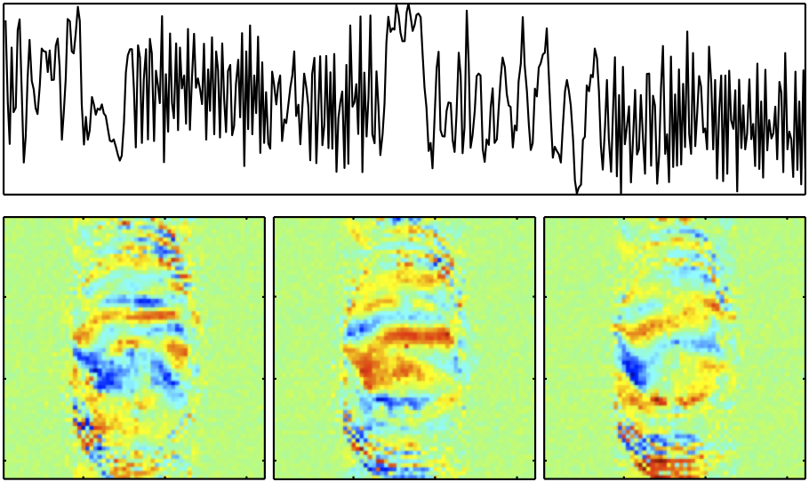

Contents
- Introduction
- User Guide
- FAQ
Overview - FMRIB's ICA-based Xnoiseifier - FIX v1.065 beta
FIX attempts to auto-classify ICA components into "good" vs "bad" components, so that the bad components can be removed from the 4D FMRI data. FIX is intended to be run on single-session MELODIC ICA output. See example raw data movies showing the (potentially huge) effect of FIX cleanup. This beta-version of FIX is a set of R, MATLAB and shell scripts and hence requires you to have various other software than just FSL - and for now is not bundled as part of FSL. If you use FIX, please cite these papers:
1. G. Salimi-Khorshidi, G. Douaud, C.F. Beckmann, M.F. Glasser, L. Griffanti S.M. Smith. Automatic denoising of functional MRI data: Combining independent component analysis and hierarchical fusion of classifiers. NeuroImage, 90:449-68, 2014
2. L. Griffanti, G. Salimi-Khorshidi, C.F. Beckmann, E.J. Auerbach, G. Douaud, C.E. Sexton, E. Zsoldos, K. Ebmeier, N. Filippini, C.E. Mackay, S. Moeller, J.G. Xu, E. Yacoub, G. Baselli, K. Ugurbil, K.L. Miller, and S.M. Smith. ICA-based artefact removal and accelerated fMRI acquisition for improved resting state network imaging. NeuroImage, 95:232-47, 2014
The latest version (1.06) can now be run without MATLAB, using either the supplied precompiled-matlab binaries, or with Octave. The other change from v1.05 is a change in the top-level meta-classifier, which gives a tiny average improvement in classification accuracy. There is no need to rerun feature generation from v1.05 for use in v1.06, but the old trained-weights files cannot be used with v1.06 (and any custom trained-weights files will need regenerating). (Minor updates: v1.061 has a tiny change from 1.06, in that it can work with the newest flavours of R that had started to create problems for 1.06. 1.061 can be used with features from 1.05-1.06 and training files from 1.06. v1.062 has a couple of minor changes to matlab code that means that near-rank-deficiency across the cleanup timeseries is more robustly handled. v1.063 and v1.064 have a couple of minor bugfixes in matlab code. v1.065 has a minor change to be compatible with an upcoming change in a future FSL release of smoothest (while still being compatible with older FSL versions).)
For FIX to work well, it is very important that it is run using good "training data". While a few example trained-weights files are supplied with FIX, for major studies we would strongly recommend training FIX on your own study data (see details in the User Guide section). You can find example training-input data, including our hand-labellings, here (note that you do not need this example training-input data in order to run FIX; you just need the download linked in the User Guide - Downloading and Installing FIX section) , which includes several trained-weights files).